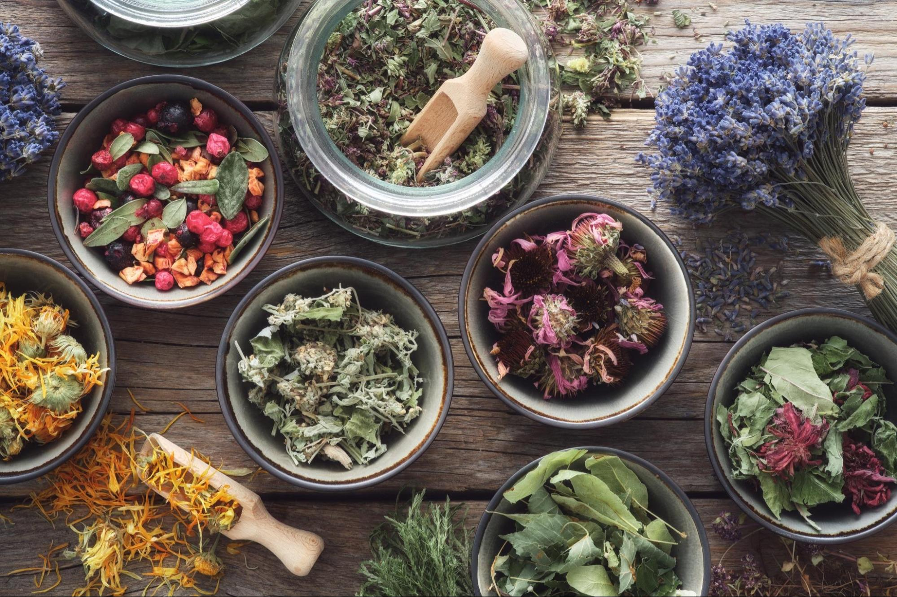
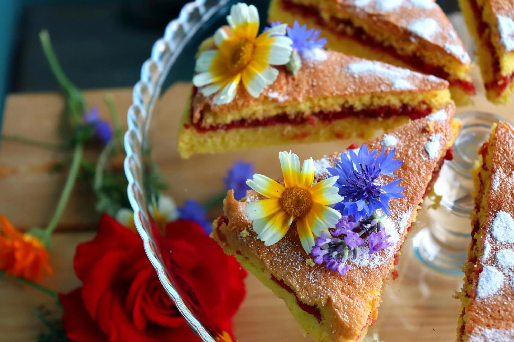
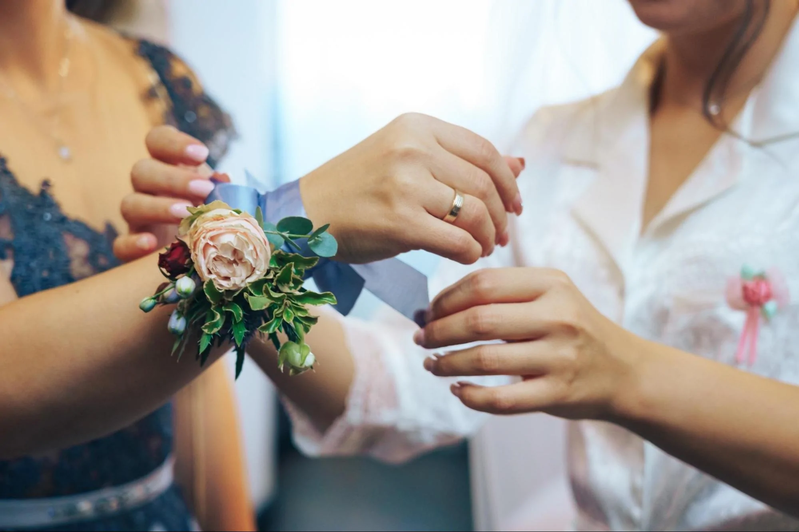

Carnations are the go-to flower for Mother's Day and commonly symbolise maternal love. They are one of the most popular and well known flowers in the world, but there are hidden depths to this innocuous bloom. From ancient Greece to Bogota, from medicine to the kitchen table, the carnation has a rich and complex history that has informed its popularity for hundreds of years.
Did you know that Carnations were not always called that? The ancient Greek botanist, Theophrastus, originally identified carnations as dianthus which came from the words Dios, or Gods, and Anthos, meaning flower. Thus, carnations were first called 'the flower of the gods.'
There are two theories about how carnations got the name we call them now. One suggests that 'carnation' came from the Romans who used them in coronation garlands for religious rituals and ceremonies. Another theory suggests that the latin caro, meaning flesh, was the inspiration behind the word due to the flower's pink, flesh-like colour. Whatever you choose to believe, it is undeniable that this flower has a rich and hidden history.
We know flowers like chamomile and lavender have medicinal properties, but you probably haven't heard about carnation's medical uses. Brewed in teas, they have been used to treat inflammation and nausea as well as alleviate menstrual symptoms in women. Carnation oil is often used in cosmetics and skincare to soothe the delicate surface of the skin. It also appears in treatments for rashes and rosacea
You may be familiar with rose-flavoured sweets and chamomile teas, but you'd be surprised to discover that carnations are also edible. These accent flowers have a peppery- almost spicy- flavour which means they are frequently used as garnishes in high-end restaurants. They are an excellent addition to salads and rice dishes but have also been used to flavour wines, beers and cocktails in modern and historic brewing. You can find many recipes that detail how to cook with carnations so next time you have a dinner party, consider brightening your dish with this charming flower.
Although carnations are famously a Mother's Day flower, they are worn and gifted for many different occasions around the world. In China, carnations outstrip all other blooms - even roses - when it comes to wedding bouquets. At Oxford University in the United Kingdom, there is a long-standing tradition of wearing carnations to exams. Students will wear a white carnation to their first exam, and a red carnation to their last one. Pink carnations are worn for exams in between. This flower is also traditionally given in bouquets for a first wedding anniversary and is the birth flower for the month of January so keep those in mind if you've recently gotten married or have a January birthday coming up!
The world's largest supplier of carnations is, surprisingly, Bogota. This Columbian city boasts an excellent climate for growing these popular blooms. The flowers thrive at moderate temperatures where they are exposed to approximately four hours of sunlight per day. Although they are grown all over the world, the temperate climate and bright sun that Bogota receives make it the perfect place to grow and harvest carnations. Not only is the climate ideal, but high global demands and local support mean that the carnation export industry is strong and stable.